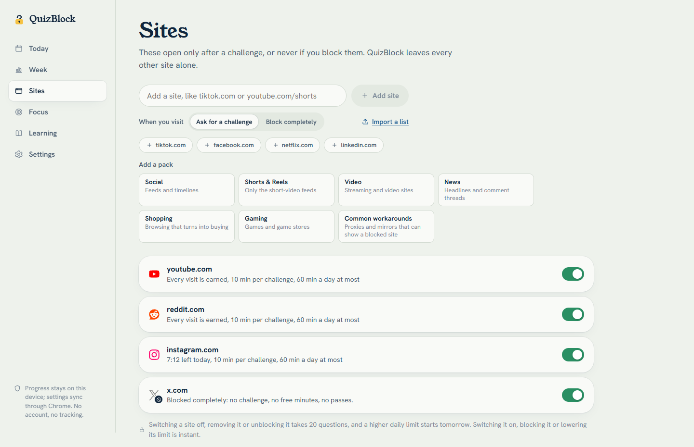

On this page
Your list can hold parts of sites as well as whole sites: a path such as youtube.com/shorts, or a subdomain such as old.reddit.com. That way you can keep the rest of the site open while the feed that pulls you in waits behind a challenge, or doesn’t open at all.
Add a part of a site
- Click QuizBlock in the toolbar, then Open dashboard, and go to Sites.
- Next to When you visit, choose Ask for a challenge or Block completely.
- Type the part into the box, for example
youtube.com/shorts, and click Add site (it reads Block site when you’ve chosen to block).
You can paste a full address: QuizBlock drops https://, www. and anything after a ? or #, and keeps up to three parts of the path. So paste the address of the section, not of one video: a Shorts video’s address would cover only that video.
Two quicker ways in:
- From the toolbar. While you’re on YouTube Shorts, Instagram Reels or Facebook Reels, the QuizBlock popup offers Gate just youtube.com/shorts (or the part you’re on). It opens Sites with the address filled in, ready to add.
- The Shorts & Reels pack. Under Add a pack on the Sites page, Shorts & Reels adds
youtube.com/shorts,instagram.com/reels,facebook.com/reelandtiktok.comin one go. You see the list first and choose how they’re added.

A part can only be stricter than its site
This is the one rule to know. A part must never make a site easier, for example by getting its own free minutes and daily limit on top of the whole site’s. So what you can add depends on whether the whole site is already on your list and switched on:
| The whole site | You can add the part |
|---|---|
| Isn’t on your list, or is switched off | With a challenge (with its own free minutes and daily limit) or blocked completely. |
| Asks for a challenge | Blocked completely only. |
| Is blocked completely | Not at all: it’s already blocked. |
If you try to add youtube.com/shorts with a challenge while youtube.com asks for one, QuizBlock explains that it already has a challenge and suggests choosing Block and adding it again.
The rule keeps holding after you’ve added a part:
- Blocking a whole site blocks the parts of it on your list too.
- Adding a whole site, or switching it back on, blocks any part of it that asks for a challenge. Open the part’s row and it says it stays blocked while the site is switched on.
- Switching a part off or removing it takes a quiz, like any site. See change your rules.
How addresses are matched
QuizBlock goes by the page’s address, not what’s on the page.
- Paths match whole sections.
youtube.com/shortscoversyoutube.com/shortsand every address under it, such asyoutube.com/shorts/abc123, and leaves the rest of YouTube alone. Capitals and a trailing slash don’t matter. - Subdomains are covered by their site.
reddit.comcoversold.reddit.comandm.reddit.com, andyoutube.com/shortscoversm.youtube.com/shortstoo. - The most specific entry wins. With
reddit.comasking for a challenge andold.reddit.comblocked, the old design stays blocked while the rest of Reddit asks for a challenge. - Time on the site doesn’t open a blocked part. Earning time on
youtube.comleaves a blockedyoutube.com/shortsblocked. - Moving inside a site is caught. Clicking through to Shorts from YouTube’s home page sends you to the gate, even though the page doesn’t reload.
Want YouTube without Shorts? Add youtube.com with a challenge, then youtube.com/shorts with Block completely. The rest of YouTube opens after a challenge; Shorts never does. Or list only youtube.com/shorts and leave the rest of YouTube alone.
Sister domains
Some sites show the same pages under more than one address. QuizBlock ships a short list of these and treats them as one site: x.com and twitter.com, for example. Listing one covers the other, and parts follow along, so a part of x.com is matched on twitter.com as well. Open a site’s row on the Sites page to see what it covers: it says “Also covers the same site at …”.
The stricter-only rule applies here too: while one address of a site is on your list and switched on, another address of the same site can only be added blocked completely. Short links such as youtu.be need no entry: they lead to the main site, which is caught there.
Examples
| Entry | What it covers |
|---|---|
youtube.com/shorts | YouTube Shorts, on youtube.com and its subdomains |
instagram.com/reels | Instagram’s Reels pages |
facebook.com/reel | Facebook’s Reels pages |
reddit.com/r/all | Reddit’s r/all feed |
old.reddit.com | Reddit’s old design only |
Your list can hold up to 100 parts of sites, within 1,000 sites in all.